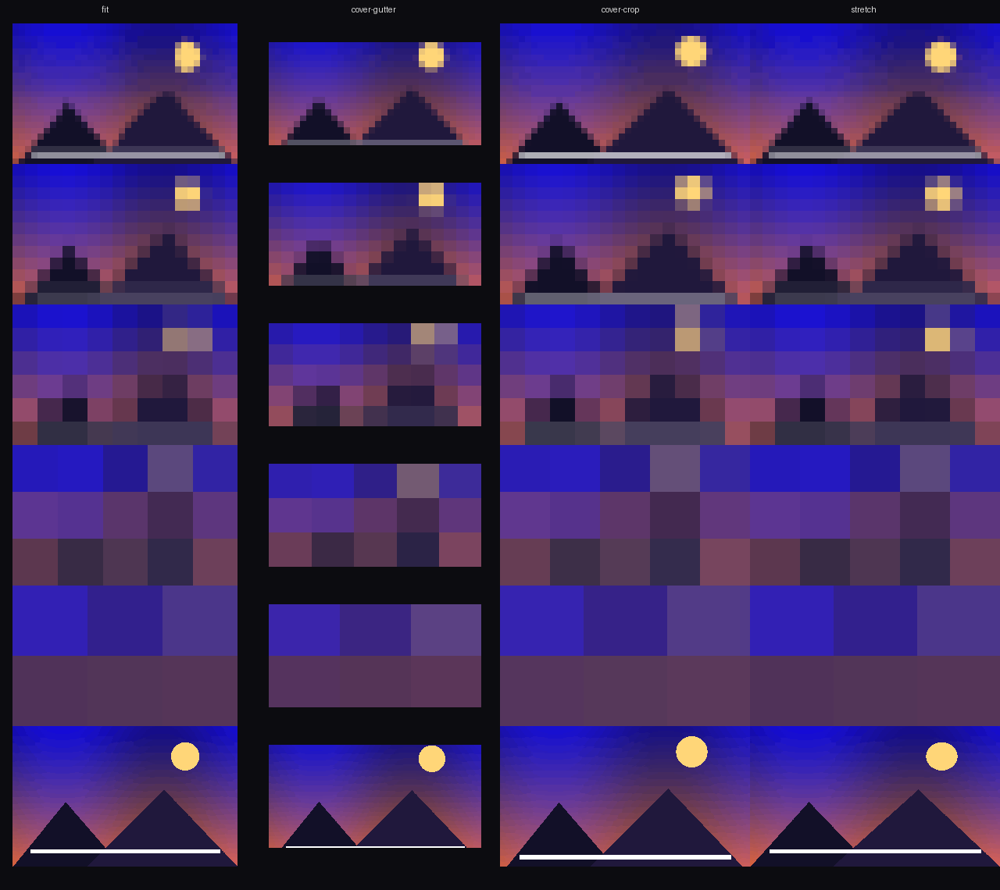

A tiny Rust daemon for niri and other wayland compositors: set a wallpaper and it arrives in literal pixel blocks — 8·16·32·64·128. Originals are kept; what gets displayed is a cached render the size of an email attachment.
$ cargo install --path crates/pixpapers
$ pixpapers add ~/Pictures/nebula.png
$ pixpapers set <id> # daemon auto-starts — on screen in ~90 msniri needs no config stanza. Prefer systemd?
contrib/pixpapers.service ships with the logout flap guard
(RestartPreventExitStatus=43).
$ pixpapers pixel <id> 8|16|32|64|128|normal # block size (default 16)
$ pixpapers placement <id> fit|cover-gutter|cover-crop|stretch
$ pixpapers bg <id> "#1a2b3c" # borders & gutter
$ pixpapers export <id> 3840x2160 --pixel 8 -o /tmp/p.png # exact preview
| what | measured (niri 26.04 · 4K · scale 1.5) |
|---|---|
| cold set → pixels on screen | 91 ms |
| hot switch p50 / p95 | 23 / 45 ms |
| variant on disk (1080p photo @ 16) | 6.3 KB — 310× smaller than the original |
| idle daemon footprint | 4.4 MB · 5 fds |
Every number is reproducible — cargo bench,
test/bench-daemon.sh, pixpapers status --bench.
Where a claim washes out (flat-art, normal, steady-state
buffers) the docs walk it back explicitly: PERF.md
and VERIFICATION.md.
Atomic config + versioned manifest; the daemon is a pure renderer that re-reads truth on every apply. Kill it — the next command respawns it (54 ms).
Pixelated look = tiny canvas. The daemon caches palette-PNG renders (kilobytes) per preset/placement/output and stretches them nearest-neighbour onto a layer-shell background surface.
No per-set opt-out you forget: pixelation applies to everything the tool sets. The only exits are normal per wallpaper or disable globally.
Compositor goes away (logout, niri restart) → clean teardown, exit 43, no flap, no stale socket. Supervisors can tell “session ended” from “crashed”.
Tested with niri 26.04 on a single 4K output; multi-output and
other compositors: layer-shell standard surface, expected-but-untested —
honesty over marketing. X11: pixpapers export + any wallpaper
setter is the supported path.